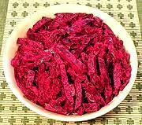

|
Beet SaladFinland - Punajuurisalaatti | ||||
| Makes: Effort: Sched: DoAhead: |
6 salad * 8 hrs Best |
A salad any beet lover (and some who thought they didn't like beets) will enjoy. "Best I've ever tasted" (from a beet enthusiast). Use a tart naturally fermented sour cream - some products are artificial and/or hardly sour. | |||
|
2 1/3 1 3 |
# t T T |
Beets Salt Horseradish (1) Sour Cream |
Make: - (8 hrs - 20 min work)
|